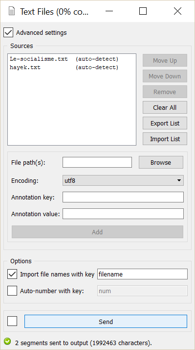

Import text from file¶
Goal¶
Import the content of one or more raw text files for further processing with Orange Textable.
Ingredients¶
Widget Text Files Icon Quantity 1
Procedure¶
Single file¶

Figure 1: Importing the content of a file using the Text Files widget.
- Create an instance of Text Files on the canvas.
- Open its interface by double-clicking on the created instance.
- Make sure the Advanced settings checkbox is not selected.
- Click the Browse button to open the file selection dialog.
- Select the file you want to import and close the file selection dialog by clicking Ok.
- In the Encoding drop-down menu, select the encoding that corresponds to your file.
- Click the Send button (or make sure the Send automatically checkbox is selected).
- A segmentation covering the file’s content is then available on the Text Files instance’s output connections; to display or export it, see Cookbook: Text output.
Multiple files¶

{kind=link}
Figure 2: Importing the content of several files using the Text Files widget.
- Create an instance of Text Files on the canvas.
- Open its interface by double-clicking on the created instance.
- Make sure the Advanced settings checkbox is selected.
- If needed, empty the list of imported files by clicking the Clear all button.
- Click the Browse button to open the file selection dialog.
- Select the first file you want to import. Select the encoding that corresponds to your file (if unknown, choose auto-detect in Encoding ) .
- Click the Add button to add your first file to the list of imported files.
- Repeat steps 5 to 7 for adding all your files.
- Click the Send button (or make sure the Send automatically checkbox is selected).
- A segmentation containing a segment covering each imported file’s content is then available on the Text Files instance’s output connections; to display or export it, see Cookbook: Text output.